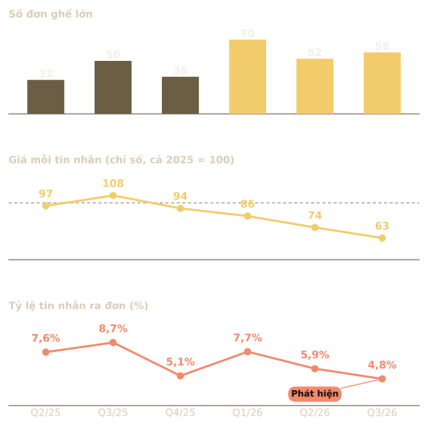
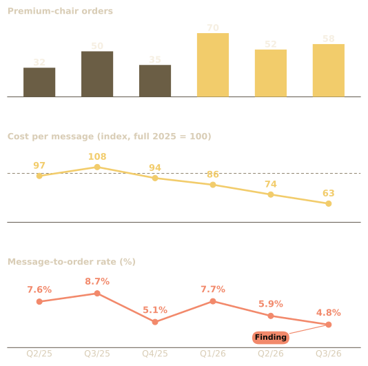
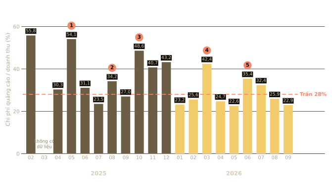
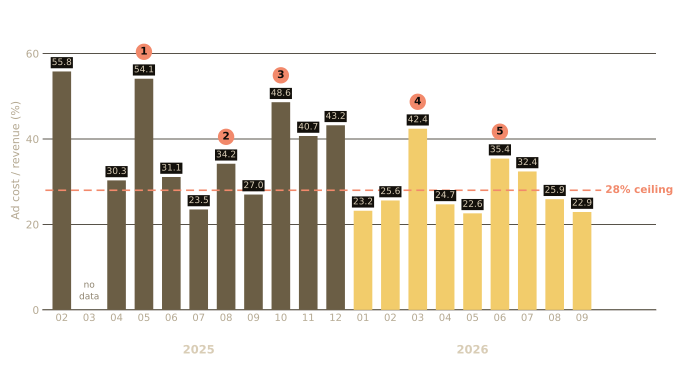
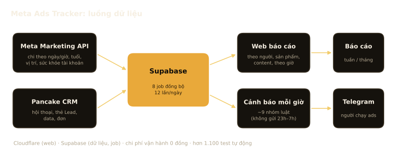
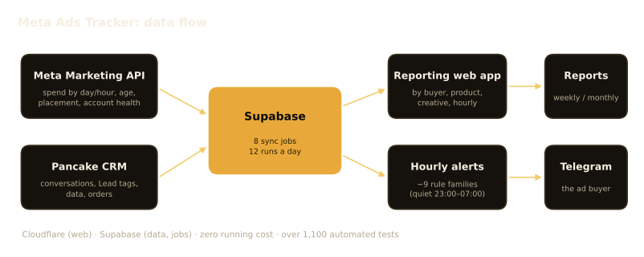
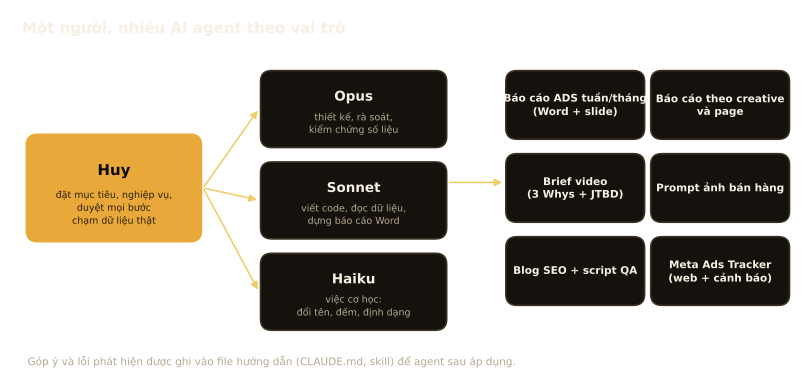
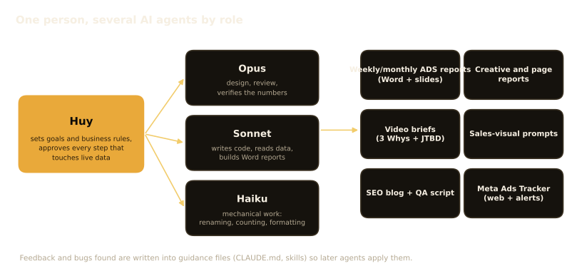

Nguyễn Trường Huy, Performance Marketer cho sản phẩm giá caoNguyen Truong Huy, Performance Marketer for high‑ticket products
Chạy Meta Ads gần 2 năm cho ghế massage giá khoảng 13–140 triệu đồng tại Campuchia; đo bằng đơn hàng, không chỉ tin nhắn rẻ.Nearly 2 years running Meta Ads for $500–$5,499 massage chairs in Cambodia; measured by orders, not just cheap messages.
Tóm tắt 30 giây30-second summary
- Vị trí mong muốnTarget role
- [Vị trí mong muốn][Target role]
- Kinh nghiệmExperience
- Meta Ads từ 01/2025 tại Zahaka Cambodia, gần 2 năm. Nhân viên Marketing (Performance & Automation).Meta Ads since Jan 2025 at Zahaka Cambodia, nearly 2 years. Marketing Executive (Performance & Automation).
- Quy môScale
- Khoảng 10 tài khoản quảng cáo. Tự phụ trách 6 page (4 page ghế cao cấp, 2 page sản phẩm bán kèm, giá trị đơn khoảng 1/7 ghế lớn), hỗ trợ vận hành 4 page của trưởng phòng. Khoảng 200 triệu đồng/tháng, tổng hơn 4 tỷ đồng.About 10 ad accounts. I own 6 pages (4 premium chairs, 2 add-on products, order value about 1/7 of a premium chair) and help operate 4 more for the manager. About $8,000/month, over $160,000 in total.
- Ngành / mô hìnhIndustry / model
- Hàng giá cao (ghế khoảng 13–140 triệu đồng), O2O: quảng cáo → tin nhắn → showroom. Seller chốt đơn trên Pancake.High-ticket goods ($500–$5,499 chairs), O2O: ads → messages → showroom. Sellers close orders in Pancake.
- Điểm mạnhStrengths
- Lập kế hoạch và quản lý ngân sách, tối ưu ROAS/CPL/CPA theo đơn hàng, A/B test content, đọc số và chẩn đoán phễu, tự động hoá báo cáo bằng dashboard và AI.Campaign planning and budget management, ROAS/CPL/CPA optimisation for orders, creative A/B testing, reading numbers and diagnosing the funnel, automating reports with dashboards and AI.
- Công cụTools
- Facebook/Meta Ads Manager (quảng cáo tin nhắn Click-to-Messenger), Pancake CRM, Google Sheets/Excel, Google Search Console, dashboard tự xây (Claude Code), ChatGPT/GPT-Image, WordPress/WooCommerce.Facebook/Meta Ads Manager (click-to-Messenger ads), Pancake CRM, Google Sheets/Excel, Google Search Console, a self-built dashboard (Claude Code), ChatGPT/GPT-Image, WordPress/WooCommerce.
- Vai trò thêmExtra role
- Hỗ trợ trưởng phòng tổng hợp và phân tích số liệu của cả team 4 người cho báo cáo tuần/tháng.Help the manager consolidate and analyze data for the 4-person team's weekly and monthly reports.
- Ngôn ngữ làm việcWorking languages
- Tiếng ViệtVietnamese
- Nơi làm việc · Thời gian bắt đầuLocation · Start date
- Đang ở TP. Hồ Chí Minh. Based in Ho Chi Minh City. [Nơi làm việc / remote][Location / remote] [Có thể bắt đầu từ][Available from]
Doanh thu tăng, chi phí giảmRevenue up, cost down
So 2026 với 2025, cùng các tháng có số liệu (T2, T4–T9). Mọi con số là tỷ lệ, số đơn hoặc chỉ số, không có doanh thu tuyệt đối.2026 versus 2025, same months with data (Feb, Apr–Sep). Every figure is a ratio, an order count or an index, never absolute revenue.
ROAS trung bình toàn kỳ 3,3x (T2/2025–T9/2026); tháng tốt nhất T5/2026 đạt 4,4x.Average ROAS over the whole period 3.3x (Feb 2025 – Sep 2026); best month, May 2026, reached 4.4x.
Ghế lớn theo quý: số đơn, giá mỗi tin nhắn, tỷ lệ tin nhắn ra đơnPremium chairs by quarter: orders, cost per message, message-to-order rate


Chỉ số giá mỗi tin nhắn: cả 10 tháng 2025 = 100. Tỷ lệ tin nhắn ra đơn = số đơn / số tin nhắn ghế lớn. Bỏ Q1/2025 vì chỉ có 1 tháng số liệu.Cost per message index: all 10 months of 2025 = 100. Message-to-order rate = orders / premium-chair messages. Q1 2025 is left out because it has only 1 month of data.
Kỳ so sánh: cùng các tháng T2, T4–T9 của hai năm (T1, T3/2025 không có báo cáo). Số liệu đến hết T9/2026.Period: the same months, Feb and Apr–Sep, in both years (no reports for Jan and Mar 2025). Figures run to the end of Sep 2026.
3 case nổi bật3 featured cases
Mỗi case đi theo mạch vấn đề, việc tôi làm, kết quả. Số liệu dùng tỷ lệ, không lộ doanh thu tuyệt đối.Each case follows problem, what I did, result. Figures are ratios; absolute revenue is never shown.
Tăng quy mô nhưng vẫn giữ chi phíScaling up while holding costs
Sản phẩm giá cao, chu kỳ ra quyết định dài; tin nhắn nhiều chưa chắc ra đơn, mà quy mô tăng thì chi phí dễ tăng theo.High-ticket product with a long decision cycle; many messages do not necessarily become orders, and costs tend to rise as spend scales.
Phân bổ ngân sách theo sản phẩm, đặt ngưỡng dừng theo Cost Mess, Cost Data, Cost Đơn và %MKT; test content theo mã, dừng bài kém, dồn ngân sách cho bài hiệu quả.Allocated budget by product and set stop thresholds on cost per message, per data point, per order and cost/revenue %; tested creatives by code, paused weak ones and moved budget to winners.
Cùng các tháng T2, T4–T9: chi phí/doanh thu 30,2% → 26,9%, doanh thu +69%, đơn ghế lớn +60%; giá tin nhắn ghế lớn Q3 −42% với số khách ×2,1.Same months (Feb, Apr–Sep): cost/revenue 30.2% → 26.9%, revenue +69%, premium-chair orders +60%; Q3 premium-chair cost per message −42% with message volume ×2.1.
Việc tôi làmWhat I did
- Phân bổ ngân sách theo sản phẩm, theo dõi chi hằng ngày, đặt ngưỡng dừng theo Cost Mess, Cost Data, Cost Đơn và % chi phí/doanh thu.Allocated budget by product, tracked spend daily, set stop thresholds on cost per message, per data point, per order and cost/revenue %.
- Test content theo mã; dừng bài kém, dồn ngân sách cho bài hiệu quả.Tested creatives by code; paused weak ones and moved budget to winners.
- Tải danh sách số điện thoại khách đã mua lên Meta để tạo tệp lookalike.Uploaded the phone-number list of past buyers to Meta to build a lookalike audience.
Kết quảResults
- Cùng các tháng T2, T4–T9: chi phí/doanh thu 30,2% (2025) → 26,9% (2026); từng quý Q1–Q3/2026 đều 27–28%. Doanh thu 2026 cao hơn 69%.Same months (Feb, Apr–Sep): cost/revenue 30.2% (2025) → 26.9% (2026); each quarter of Q1–Q3 2026 at 27–28%. 2026 revenue is 69% higher.
- Giá tin nhắn ghế lớn −42%, số khách nhắn tin ×2,1 (Q3/2025 → Q3/2026).Cost per premium-chair message −42% with message volume ×2.1 (Q3 2025 → Q3 2026).
- Nhóm quảng cáo album ảnh: chi phí 12,6% doanh thu (ROAS khoảng 7,9x), T2/2025–T9/2026.Photo-album ad group: cost at 12.6% of revenue (about 7.9x ROAS), Feb 2025 – Sep 2026.
- 298 đơn ghế cao cấp từ quảng cáo (T2/2025 – T9/2026).298 premium-chair orders from ads (Feb 2025 – Sep 2026).
- Tháng tốt nhất T5/2026: chi phí 22,6% doanh thu (ROAS 4,4x). T8/2026, nhóm ghế lớn: doanh thu +12% trong khi chi −19%.Best month, May 2026: cost at 22.6% of revenue (4.4x ROAS). Aug 2026, premium chairs: revenue +12% while spend −19%.
Kéo chỉ số về khi xấu điPulling the numbers back when they worsen
5 lần chỉ số xấu đi, cả 5 lần kéo về dưới trần 28% trong 1–3 tháng. Trần 28% là mức chi phí/doanh thu công ty đặt ra. Cột “Xấu đi” là chi phí/doanh thu tổng / ghế lớn.The numbers worsened 5 times, and all 5 times they came back under the 28% ceiling within 1–3 months. 28% is the company ceiling for cost/revenue. The “Worsened” column shows total / premium-chair cost/revenue.
| LầnNo. | Xấu điWorsened | Kéo vềPulled back | Việc đã làmWhat was done |
|---|---|---|---|
| 1 | T5/2025: 54,1% / 51,8%May 2025: 54.1% / 51.8% | T6 31,1% → T7 23,5%Jun 31.1% → Jul 23.5% | Mở kênh sản phẩm bán kèm 1D; chuyển bài chương trình đắt sang remarketing.Opened the 1D add-on channel; moved expensive offer posts to remarketing. |
| 2 | T8/2025: 34,2% / 42,1%Aug 2025: 34.2% / 42.1% | T9/2025: 27,0%Sep 2025: 27.0% | Giảm ngân sách test; giá mỗi tin nhắn theo tuần 1,21 triệu → 654 nghìn đồng.Cut test budget; weekly cost per message roughly halved. |
| 3 | T10–T12/2025: 40,7–48,6%Oct–Dec 2025: 40.7–48.6% | T1/2026: 23,2%Jan 2026: 23.2% | Tắt dòng ghế H4 sau 8 tuần không ra đơn (bài học: đặt trần test); chia page chính và page vệ tinh.Switched off the H4 chair line after 8 weeks with no orders (lesson: set a test cap); split into a main page and satellite pages. |
| 4 | T3/2026: 42,4% / 49,6%Mar 2026: 42.4% / 49.6% | T4/2026: 24,7%Apr 2026: 24.7% | Đổi tệp khách, hạn chế content giảm giá sâu (chẩn đoán: giảm giá kéo khách ham rẻ).Changed the audience and limited deep-discount content (diagnosis: discounts attract bargain hunters). |
| 5 | T6–T7/2026: tổng 35,4% và 32,4% (ghế lớn 34,1% và 34,3%)Jun–Jul 2026: total 35.4% and 32.4% (premium chairs 34.1% and 34.3%) | T8/2026: 25,9%Aug 2026: 25.9% | Giữ sản phẩm mới A11 khi đơn về chậm, tăng ngân sách từng bước 20–30%; tuần chốt yếu nhận định là đơn ghi nhận trễ, không cắt vội (dự báo đúng 2 lần).Kept the new product A11 while orders arrived slowly and raised budget in steps of 20–30%; on weak closing weeks I judged orders were logged late and did not cut in a hurry (the call was right twice). |
Lưu ý trung thực: nhiều thay đổi diễn ra cùng lúc, có yếu tố mùa lễ và quyết định của công ty, nên đây là các việc đi cùng với kết quả, không chứng minh từng việc gây ra kết quả.Honest note: many changes happened at the same time, with holiday-season effects and company decisions in the mix, so these are actions that went alongside the results, not proof that each one caused them.
Chi phí quảng cáo / doanh thu theo tháng (thấp hơn là tốt hơn)Ad cost / revenue by month (lower is better)


Chi phí quảng cáo / doanh thu theo tháng, T2/2025–T9/2026. Vạch đứt là trần 28%. Số 1–5 đánh dấu 5 lần chỉ số xấu đi và được kéo về. T1 và T3/2025 không có báo cáo. Ghế cao cấp + sản phẩm bán kèm.Ad cost / revenue by month, Feb 2025 – Sep 2026. The dashed line is the 28% ceiling. Numbers 1–5 mark the 5 times the figure worsened and was pulled back. No reports for Jan and Mar 2025. Premium chairs + add-on products.
"Tin nhắn rẻ chưa chắc là tốt""Cheap messages are not always good"
Giá mỗi tin nhắn giảm 42% nhưng tỷ lệ chốt (đơn / tin nhắn, ghế lớn) giảm từ 8,7% xuống 4,8%: tin nhắn rẻ hơn nhưng nhiều người chỉ hỏi giá.Cost per message fell 42% but the close rate (orders / messages, premium chairs) fell from 8.7% to 4.8%: messages got cheaper but many people only ask for the price.
Đổi cách chấm content: từ giá tin nhắn sang tỷ lệ lead hợp lệ và số đơn; content không mở đầu bằng giảm giá.Changed how I score creatives: from cost per message to qualified-lead rate and orders; creatives no longer open with a discount.
Số đơn ghế lớn Q3/2026 vẫn cao hơn cùng kỳ (58 so với 50, +16%) dù tỷ lệ chốt giảm, nhờ số khách nhắn tin gấp 2,1 lần; bài học dẫn tới cách chấm content theo chất lượng khách.Premium-chair orders in Q3 2026 were still above the same quarter a year earlier (58 vs 50, +16%) despite the lower close rate, thanks to 2.1 times as many people messaging; the lesson led to scoring creatives by customer quality.
Tỷ lệ chốt (đơn / tin nhắn, ghế lớn) giảm từ Q3/2025 xuống Q3/2026 trong khi giá mỗi tin nhắn giảm 42%. Tin nhắn rẻ hơn nhưng nhiều người chỉ hỏi giá. Quý 3/2026 là mức thấp nhất trong 6 quý có đủ số liệu; tỷ lệ này dao động theo quý (Q1/2026 là 7,7%) nên cần theo dõi tiếp.The close rate (orders / messages, premium chairs) fell from Q3 2025 to Q3 2026 while cost per message fell 42%. Messages got cheaper but many people only ask for the price. Q3 2026 is the lowest of the 6 quarters with full data; the rate moves from quarter to quarter (Q1 2026 was 7.7%), so it needs continued watching.
Bài họcLesson
Với hàng giá cao, chỉ số cần tối ưu là chất lượng khách, không phải giá rẻ nhất hay CTR cao nhất.For high-ticket goods, the metric to optimize is customer quality, not the lowest price or the highest CTR.
Bằng chứng theo quýThe evidence by quarter
Q2/2025 – Q3/2026. Chỉ số giá mỗi tin nhắn: cả 2025 = 100.Q2 2025 – Q3 2026. Cost per message index: full 2025 = 100.
Meta Ads Tracker
Web báo cáo và cảnh báo tự động cho đội quảng cáo. Tôi thiết kế nghiệp vụ (đo gì, ngưỡng nào, cảnh báo khi nào) và điều phối AI agent (Claude Code) viết code.An automated reporting and alerting web app for the ad team. I design the business logic (what to measure, which thresholds, when to alert) and direct AI agents (Claude Code) that write the code.
Dự án từ 05/10/2026, vẫn đang phát triển.Built since 05/10/2026 and still evolving.
Team chưa có quy trình báo cáo: Google Sheet làm tay, chậm, dễ lệch số; chỉ biết chiến dịch có vấn đề vào sáng hôm sau.The team had no reporting process: manual Google Sheets, slow and error-prone; problems showed up only the next morning.
Thiết kế nghiệp vụ (đo gì, ngưỡng nào, cảnh báo khi nào) và điều phối Claude Code viết code; đồng bộ 12 lần/ngày, khoảng 9 nhóm cảnh báo qua Telegram.Designed the business logic (what to measure, which thresholds, when to alert) and directed Claude Code to write the code; 12 syncs a day, about 9 alert families via Telegram.
Tiết kiệm hơn 20 giờ làm báo cáo mỗi tháng; chi phí vận hành 0 đồng.Over 20 hours of reporting saved each month; zero running cost.
- 8 job đồng bộ, 12 lần/ngày8 sync jobs, 12 runs/day
- ~9 nhóm cảnh báo qua Telegram~9 alert families via Telegram
- Chi phí vận hành 0 đồngZero running cost
- Hơn 1.100 test tự độngOver 1,100 automated tests
- React · TypeScript · Supabase · Cloudflare
Cùng một trục 0–90 phút. Khoảng thời gian được vẽ ở điểm giữa (1–2 giờ = 90 phút; 25–30 phút = 27,5 phút). Tổng tiết kiệm hơn 20 giờ mỗi tháng. Từ giữa T11/2026 dùng làm nguồn số liệu cho báo cáo tuần.Same 0–90 minute axis. Ranges are drawn at their midpoint (1–2 hours = 90 min; 25–30 min = 27.5 min). Total saving over 20 hours a month. Since mid-Nov 2026 it has been used as a data source for weekly reports.
- Lead chốt lúc 11h hôm sau: khách được gắn thẻ muộn, nên số của ngày D chỉ tin được sau 11h ngày D+1.Leads lock at 11:00 the next day: customers get tagged late, so day D's numbers are only reliable after 11:00 on D+1.
- Không cảnh báo theo xếp hạng tương tác/chuyển đổi: Meta báo "dưới trung bình" cho 40/48 quảng cáo ở thị trường này, nên chỉ hiện tham khảo.No alerts on engagement/conversion rankings: Meta flags 40 of 48 ads as "below average" in this market, so it is shown for reference only.
- Không khuyên cắt vị trí hiển thị chính: bản đầu báo sai 15 chiến dịch; siết luật còn 1–3 cảnh báo đúng. Cảnh báo sai còn tệ hơn không cảnh báo.Never advise cutting a main placement: the first version was wrong on 15 campaigns; tightened rules leave 1–3 correct alerts. A false alert is worse than no alert.
- Hook rate tính lại sau khi tạm dừng: tránh báo nhầm "giảm 97%" khi quảng cáo đổi từ video sang ảnh.Hook rate restarts after a pause: avoids a false "down 97%" when an ad switches from video to image.
- Không tin API tuyệt đối: hơn 10.000 nhóm quảng cáo đã chạy xong vẫn báo đang bật; chỉ xét chiến dịch có chi tiêu 3 ngày gần nhất.Never trust the API blindly: over 10,000 finished ad sets still report "active"; only campaigns with spend in the last 3 days are considered.
Ảnh chụp từ bản demo của web: tên và mã thay bằng mẫu; chi tiêu, doanh thu và số khách đã được biến đổi bằng các hệ số bí mật, nên mọi con số và tỷ lệ trên ảnh chỉ để minh hoạ, không phải kết quả thật. Lưu ý: ảnh Ngân sách có thêm vài tình huống dựng để minh hoạ tính năng (campaign bị tắt, quảng cáo chờ duyệt); ảnh Telegram là bản dựng lại đúng định dạng tin của bot, không phải ảnh chụp điện thoại.Screenshots taken from the web app's demo build: names and codes replaced with samples; spend, revenue and customer counts transformed with secret factors, so every figure and ratio shown is illustrative, not a real result. Note: the Budget screenshot includes a few staged situations to illustrate the feature (stopped campaigns, ads pending review); the Telegram image is a rendering of the bot's real message format, not a phone screenshot.
Lưu ý trung thực: kết quả quảng cáo (−42% giá tin nhắn, ROAS) có trước khi có web, tôi không gán cho công cụ. Tracker giúp phát hiện sớm và tiết kiệm thời gian báo cáo.Honest note: the ad results (−42% cost per message, ROAS) came before the web app, and I do not credit them to the tool. The tracker helps catch problems early and saves reporting time.
Luồng dữ liệuData flow


Kinh nghiệm khácMore experience
Bấm vào từng mục để xem đầy đủ bối cảnh, việc tôi làm và số liệu.Open any item for the full context, what I did and the figures.
23,223.2%chi phí / doanh thu T1/2026, sau khi chia vai pagecost / revenue in Jan 2026, after giving pages clear rolesChia vai page và giữ định vị giá caoPage roles and premium positioningMỗi page một dòng ghế; page chính neo giá từ cao xuống thấp, page vệ tinh chạy một thông điệp sản phẩm.Each page focuses on one chair line; the main page anchors prices from high to low, satellite pages run one product message.Xem chi tiếtView detailsThu gọnCollapse
Bối cảnhContext
Năm 2025 nhiều page cùng chạy nhiều sản phẩm, khách nhắn trùng page, chương trình giảm giá chạy dàn trải.In 2025 many pages ran many products at once, customers messaged several pages, and discount offers were spread thin.
Việc tôi làmWhat I did
- Chia vai page (T9/2025): mỗi page tập trung một dòng ghế; hai page lớn chạy chương trình tháng cho cả hệ thống.Page roles (Sep 2025): each page focuses on one chair line; two large pages run the monthly offer for the whole network.
- Page chính và page vệ tinh (T1/2026): page chính đăng chương trình với giá từ cao xuống thấp; page vệ tinh chạy một thông điệp sản phẩm và remarketing nửa cuối tháng.Main and satellite pages (Jan 2026): the main page shows the offer with prices from high to low; satellite pages run one product message and remarketing in the second half of the month.
- Sửa cách test (11/2025): ban đầu chia nhiều camp ngân sách nhỏ, tắt khi tiêu 250 nghìn chưa có tin nhắn; thấy quảng cáo học kém vì ngân sách quá mỏng nên chuyển sang dồn ngân sách test vào ít nhóm, bài tốt thì thêm quảng cáo vào nhóm và tăng ngân sách thay vì nhân camp.Fixed the testing method (Nov 2025): at first I split spend across many small-budget campaigns and stopped each at 250K VND with no message; ads learned poorly because budgets were too thin, so I concentrated test budget in fewer groups, and for proven posts add ads to the group and raise budget instead of duplicating campaigns.
Giữ định vị giá caoKeeping premium positioning
Khi phân tích một dòng ghế mới (11/2025), tôi rút ra: khách chưa hứng thú với sản phẩm thì quà hay giảm giá cũng không có giá trị. Trong báo cáo tổng kết T12/2025 tôi nêu: giảm giá sâu liên tục và quá nhiều bài dòng thấp khiến khách xem thương hiệu là hàng rẻ, không chấp nhận giá dòng cao. T3–T4/2026 đổi tệp khách và hạn chế ưu đãi: chi phí/doanh thu ghế lớn từ 49,6% (T3) về 23,7% (T4). Từ T4/2026 content chuyển sang giáo dục giá trị: tin nhắn đắt hơn nhưng khách hiểu đúng giá trị sản phẩm.Analysing a new chair line (Nov 2025), I concluded that when customers are not interested in the product, gifts and discounts add no value. In my Dec 2025 summary report I stated that constant deep discounts and too many low-end posts made customers see the brand as cheap and reject premium prices. In Mar–Apr 2026 I changed the audience and limited offers: premium-chair cost/revenue went from 49.6% (Mar) to 23.7% (Apr). From Apr 2026 creatives shifted to explaining value: messages cost more, but customers understand what the product is worth.
Bài học: với hàng giá cao, cấu trúc page và thông điệp quan trọng không kém việc tối ưu từng quảng cáo.Lesson: for high-ticket goods, page structure and messaging matter as much as tuning each ad.
3 tầng3 stagesnhận biết · tin tưởng · chốtawareness · trust · conversionPhễu O2O và thang giá trịThe O2O funnel and value ladderKhách mua ghế khoảng 13–140 triệu đồng tìm hiểu kỹ, bàn với gia đình và thường chốt trễ, nên một quảng cáo đơn lẻ không đủ.Buyers of $500–$5,499 chairs research carefully, talk it over with family and often decide late, so a single ad is not enough.Xem chi tiếtView detailsThu gọnCollapse
Khách mua ghế khoảng 13–140 triệu đồng tìm hiểu kỹ, bàn với gia đình, so sánh nhiều nơi và thường chốt trễ. Một quảng cáo đơn lẻ không đủ để họ quyết định.Buyers of $500–$5,499 chairs research carefully, talk it over with family, compare stores and often decide late. A single ad is not enough.
Phễu bán hàng O2O 3 tầngThree-stage O2O sales funnel
![Sơ đồ phễu 3 tầng. Nhận biết: bài brand, video review showroom chạy ThruPlay và Reach, đo bằng khách tự nhắn tăng. Tin tưởng: feedback, ảnh tại nhà khách, KOL, bài bác sĩ đề xuất, đo bằng tỷ lệ tin nhắn ra data và % lead hợp lệ. Chốt: chương trình tháng, event, remarketing nửa cuối tháng, đo bằng chi phí mỗi đơn, tỷ lệ chốt và trần chi phí 28% doanh thu. Mũi tên remarketing đưa khách từ tầng nhận biết về tầng chốt. Bên dưới là 6 bậc đo: Quảng cáo, Tin nhắn, Lead hợp lệ, Data hoặc hẹn ghé, Ghé showroom, Đơn hàng; khoảng 6,3% tin nhắn ghế cao cấp ra đơn.](img/funnel_vi.svg)
![Three-stage funnel diagram. Awareness: brand posts and showroom review videos on ThruPlay and Reach, measured by more organic messages. Trust: feedback, in-home photos, KOLs, doctor-recommended posts, measured by message-to-data rate and qualified-lead %. Conversion: monthly offers, events and second-half-of-month remarketing, measured by cost per order, close rate and a 28% cost/revenue ceiling. A remarketing arrow brings people from awareness to conversion. Below are 6 measured steps: Ads, Messages, Qualified lead, Data or visit, Showroom visit, Order; about 6.3% of premium-chair messages became orders.](img/funnel_en.svg)
Phễu 3 tầngThree-stage funnel
| TầngStage | Mục đíchPurpose | Nội dung, chiến dịchContent, campaigns | Đo bằngMeasured by |
|---|---|---|---|
| Nhận biếtAwareness | Khơi gợi nhu cầu, phủ thương hiệuSpark demand, cover the brand | Bài brand, video review showroom chạy ThruPlay, Reach cho chương trình lớnBrand posts, showroom review videos on ThruPlay, Reach for big offers | Khách tự nhắn tăng, giá tin nhắn các bài khác trên page giảmMore organic messages, lower cost per message on the page's other posts |
| Tin tưởngTrust | Cho khách lý do tinGive a reason to believe | Feedback, ảnh tại nhà khách, KOL, bài bác sĩ đề xuất, bài tính năngFeedback, in-home photos, KOLs, doctor-recommended posts, feature posts | Tỷ lệ tin nhắn ra data, % lead hợp lệMessage-to-data rate, qualified-lead % |
| ChốtConversion | Cho khách lý do quyết ngayGive a reason to decide now | Chương trình tháng, event (sinh nhật, lễ), remarketing nửa cuối thángMonthly offers, events (anniversary, holidays), second-half-of-month remarketing | Chi phí mỗi đơn, tỷ lệ chốt, %MKTCost per order, close rate, cost/revenue |
Đo theo từng bậc: tin nhắn → số điện thoại → hẹn ghé, đã ghé showroom → đơn; mỗi bậc có ngưỡng riêng và trần chi phí 28% tổng doanh thu (từ T4/2026). Từ T8/2026 đo đủ bậc khách đã ghé showroom.Measured at each step: message → phone number → booked or completed showroom visit → order; each step has its own threshold, with a 28% ceiling on cost over total revenue (since Apr 2026). Since Aug 2026 showroom visits are measured too.
Remarketing theo chu kỳRemarketing by offer cycle
- T6/2025: bài chương trình đắt thì chuyển sang remarketing và ra đơn; giữ làm cách chạy chuẩn từ đó.Jun 2025: expensive offer posts moved to remarketing and produced orders; kept as the standard from then on.
- T1/2026: chỉ remarketing nửa cuối tháng, khi khách đã tìm hiểu đủ.Jan 2026: remarketing only in the second half of the month, once customers have done their research.
- T5/2026: remarketing bằng bài giá trị và feedback.May 2026: remarketing with value and feedback posts.
Thang giá trịValue ladder
- Bán lên: một model tầm trung có giá tin nhắn rẻ làm sản phẩm phễu, kéo khách về page rồi chuyển lên dòng cao; khách đến từ quảng cáo sản phẩm bán kèm cũng mua ghế lớn.Upsell: a mid-range model with cheap messages as the entry product, then moving buyers up; customers from add-on ads also bought premium chairs.
- Mở rộng phễu: chạy lại dòng cũ có KOL để định hình phân khúc giá cho page cao cấp.Wider top: rerunning older models with KOLs to frame the price range for premium pages.
- Tăng giá trị đơn: combo sản phẩm bán kèm với phụ kiện.Higher order value: bundling add-on products with accessories.
Hướng phát triển tiếpWhat I want to improve next
- Đo hiệu quả thật của tầng nhận biết và remarketing bằng test có nhóm đối chứng.Measure the real effect of awareness and remarketing with holdout tests.
- Theo dõi độ trễ chốt theo từng nhóm khách để biết bao lâu một lead ra đơn.Track time-to-close by customer cohort to know how long a lead takes to buy.
- Khai thác khách đã mua: giới thiệu, bán kèm phụ kiện, chăm sóc sau bán.Work with past buyers: referrals, accessory sales, after-sales care.
373 đơn373 orderschi phí 28,0% doanh thu, T6/2025–T9/202628.0% cost/revenue, Jun 2025 – Sep 2026Mở kênh sản phẩm bán kèm từ đầuLaunching the add-on product channel from zeroDựng tài khoản, page, cấu trúc chiến dịch và content riêng cho dòng sản phẩm giá trị đơn khoảng 1/7 ghế cao cấp.Set up the account, pages, campaign structure and creatives for a line with an order value of about 1/7 of a premium chair.Xem chi tiếtView detailsThu gọnCollapse
Bối cảnhContext
Từ T6/2025 công ty mở dòng sản phẩm giá thấp hơn (giá trị đơn khoảng 1/7 ghế cao cấp), chưa có kênh quảng cáo.From June 2025 the company opened a lower-priced line (order value about 1/7 of a premium chair) with no ad channel yet.
Việc tôi làmWhat I did
Dựng tài khoản, page, cấu trúc chiến dịch và content riêng cho dòng sản phẩm này.Set up the account, pages, campaign structure and dedicated creatives for this product line.
Kết quảResults
chi phí / doanh thu, T6/2025 – T9/2026cost / revenue, Jun 2025 – Sep 2026
Tháng đầu (T6/2025), chi phí/doanh thu theo tuần: 69% → 57% → 24% → 19%.First month (Jun 2025), weekly cost/revenue: 69% → 57% → 24% → 19%.
3 nhu cầu3 needsbáo hiếu · trị liệu · khẳng định vị thếfilial gift · pain relief · statusContent cho sản phẩm giá caoAd creative for high-ticket productsContent để người xem tự thuyết phục mình; ưu đãi chỉ giúp khách quyết nhanh hơn.Creative that lets viewers convince themselves; an offer only helps them decide faster.Xem chi tiếtView detailsThu gọnCollapse
Triết lý: content để người xem tự thuyết phục mình; ưu đãi chỉ giúp khách quyết nhanh hơn, không phải lý do mua.Philosophy: creative should let viewers convince themselves; an offer only helps them decide faster and is not the reason to buy.
Báo hiếuFilial gift
Con mua cho cha mẹ, mua sự an tâm.Children buying for their parents, buying peace of mind.
Trị liệuPain relief
Đau lưng, cổ, cần giải pháp tại nhà.Back and neck pain, needing a solution at home.
Khẳng định vị thếStatus
Doanh nhân, ghế là nội thất cao cấp.Business owners, the chair as premium furniture.
Quy trìnhProcess
6 nguyên tắc ảnh bán hàng6 principles for sales visuals
- Mỗi thông điệp một khung.One message per frame.
- Thứ tự mắt: ghế → con số ưu đãi → quà → tên → kêu gọi.Eye order: chair → offer figure → gift → name → call to action.
- Ghế chiếm 55–60% chiều cao.The chair takes 55–60% of the height.
- Con số ưu đãi tương phản mạnh nhất.The offer figure has the strongest contrast.
- Quà là hình thật, không ghi giá trị.Gifts shown as real photos, no stated value.
- Ít chữ, chữ to.Little text, large text.
Ảnh với AIVisuals with AI
Tư liệu → brief → tài nguyên → bố cục → prompt → dịch Khmer → tạo ảnh → soát → đăng → đo chi phí/đơn. Mỗi chiến dịch một hình tượng riêng (mở hộp quà, vé mời "SHOWROOM PASS", sân khấu nổi trên sông đêm hội).Source material → brief → assets → layout → prompt → Khmer translation → generate → review → publish → measure cost per order. Each campaign gets its own concept (unwrapping a gift, a "SHOWROOM PASS" invitation, a stage floating on a festival river at night).
Khung một brief video (bản mẫu đã ẩn thông tin nội bộ)Skeleton of a video brief (sample, internal details removed)
Chấm content theo % lead hợp lệ và số đơn, không theo giá tin nhắn.Creatives are scored by qualified-lead % and orders, not by cost per message.
+62%lượt hiển thị sau 2 tuầnimpressions after 2 weeksPhục hồi SEO zahaka.comRecovering SEO for zahaka.comChẩn đoán redirect sai, trang tranh từ khóa, thiếu schema; sửa theo lô nhỏ có sao lưu.Diagnosed wrong redirects, keyword cannibalization and missing schema; fixed in small backed-up batches.Xem chi tiếtView detailsThu gọnCollapse
Bối cảnhContext
Từ 13/10, trang sản phẩm chủ lực tụt hạng.From 13 October the flagship product pages dropped in rankings.
Chẩn đoánDiagnosis
Redirect tag sai, nhiều trang tranh cùng từ khóa, thiếu schema.Wrong tag redirects, several pages competing for the same keyword, missing schema.
Việc tôi làmWhat I did
Kế hoạch 5 giai đoạn (backup → sửa theo lô nhỏ → kiểm tra lại → xoá cache); bản đồ 190 từ khóa, 6 trụ nội dung; quy trình viết bài có brief, soát dữ kiện, QA; 5 bài mới trong tháng 10.A 5-stage plan (backup → fix in small batches → re-check → clear cache); a 190-keyword map and 6 content pillars; an article workflow with brief, fact-check and QA; 5 new articles in October.
Trung thực: đây là kết quả bước đầu sau 2 tuần, số tuyệt đối còn nhỏ; tôi sẽ cập nhật khi có 2–3 tháng dữ liệu.Honest note: these are early results after 2 weeks and absolute numbers are still small; I will update when 2–3 months of data are in.
Hành trình 2 nămTwo-year journey
Theo báo cáo tuần/tháng tôi tự viếtFrom the weekly and monthly reports I wrote
| Giai đoạnPeriod | Tôi làm gìWhat I did | MốcMilestone |
|---|---|---|
| 1 – 3/2025 · Bắt đầu chạyJan – Mar 2025 · Starting out | Kênh chính lúc đầu là sản phẩm MD888; T3/2025 test cùng lúc nhiều dòng ghế, tắt dòng không ra tin nhắn, giữ 2 dòng với trần 1–1,5 triệu/ngày.The first main channel was the MD888 product; in Mar 2025 tested many chair lines at once, switched off lines with no messages, kept 2 lines with a daily cap of 1–1.5 million VND. | T2/2025: 55,8%Feb 2025: 55.8% |
| 4 – 9/2025 · Có cấu trúcApr – Sep 2025 · Adding structure | Mục tiêu tuần theo ngân sách, giá tin nhắn, giá data, %MKT; mở kênh sản phẩm bán kèm; tìm ra cách remarketing chương trình tháng; chia vai page theo sản phẩm.Weekly targets for budget, cost per message, cost per data point and cost/revenue; launched the add-on channel; found a remarketing rhythm for monthly offers; gave each page a product role. | T7/2025: 23,5%Jul 2025: 23.5% |
| 10/2025 – 3/2026 · Chiến lượcOct 2025 – Mar 2026 · Strategy | Đổi cách test; mô hình page chính và page vệ tinh; nhận ra giảm giá sâu liên tục làm rẻ thương hiệu.Changed the testing method; set up a main page with satellite pages; saw that constant deep discounts cheapen the brand. | T1/2026: 23,2%Jan 2026: 23.2% |
| 4 – 8/2026 · Số liệu dẫn quyết địnhApr – Aug 2026 · Data-led decisions | Đề xuất dừng nhóm chương trình tiêu nhiều mà không ra data (người duyệt: trưởng phòng marketing); ngưỡng dừng theo giá tin nhắn và giá data (từ T7); chỉ tiêu dẫn tính ngược từ đích doanh thu (từ T6); giữ sản phẩm mới A11 và tăng ngân sách từng bước.Proposed stopping an offer group that spent heavily with no leads (approver: the marketing manager); stop thresholds on cost per message and per data point (from Jul); leading targets worked back from the revenue goal (from Jun); kept the new product A11 and raised budget in steps. | T5/2026: 22,6% (ROAS 4,4x)May 2026: 22.6% (4.4x ROAS) |
| 9/2026 · Xây công cụSep 2026 · Building the tool | Bắt đầu xây Meta Ads Tracker.Started building Meta Ads Tracker. | T9/2026: 22,9%Sep 2026: 22.9% |
Một người, nhiều AI agent theo vai tròOne person, several AI agents by role
Opus lên thiết kế, rà soát và kiểm chứng trên dữ liệu thật.Opus designs, reviews and verifies against real data.
Sonnet viết code và nội dung theo bản thiết kế.Sonnet writes code and content following the design.
Haiku làm việc cơ học: kéo dữ liệu, đăng theo danh sách.Haiku does mechanical work: pulling data, posting from a list.
Mọi bước chạm dữ liệu thật đều cần tôi duyệt; lỗi phát hiện được ghi thành quy tắc.Every step touching live data needs my approval; bugs found become written rules.
Bộ skill tự viếtCustom skills
Báo cáo ADS tuần/tháng ra Word và slide; báo cáo theo creative và page; brief video; prompt ảnh bán hàng; blog SEO có script QA; trang sản phẩm WooCommerce.Weekly/monthly ADS reports to Word and slides; creative and page reports; video briefs; sales-visual prompts; SEO blog with a QA script; WooCommerce product pages.
Đưa lên hệ thống thật có kiểm soátControlled rollout
Test ở máy → nạp dữ liệu cũ, đối chiếu số đã có → bật lịch → kiểm tra giao diện.Test locally → load historical data and reconcile with known numbers → enable the schedule → check the interface.
Biến góp ý thành quy tắcTurning feedback into rules
Lỗi thiết kế phát hiện được ghi vào file hướng dẫn (CLAUDE.md) để mọi agent sau đều áp dụng.Design flaws found are written into a guidance file (CLAUDE.md) so every later agent applies them.


Cần một người chạy quảng cáo nhìn vào đơn hàng?Need an ad buyer who looks at orders?
Tôi đang tìm môi trường để phát triển sâu hơn về performance marketing. Tải CV hoặc liên hệ trực tiếp bên dưới.I'm looking for a team where I can grow deeper in performance marketing. Download the CV or get in touch below.
© 2026 Nguyễn Trường Huy · Số liệu dùng tỷ lệ theo thỏa thuận bảo mật với công ty© 2026 Nguyen Truong Huy · Figures are ratios, per the company confidentiality agreement